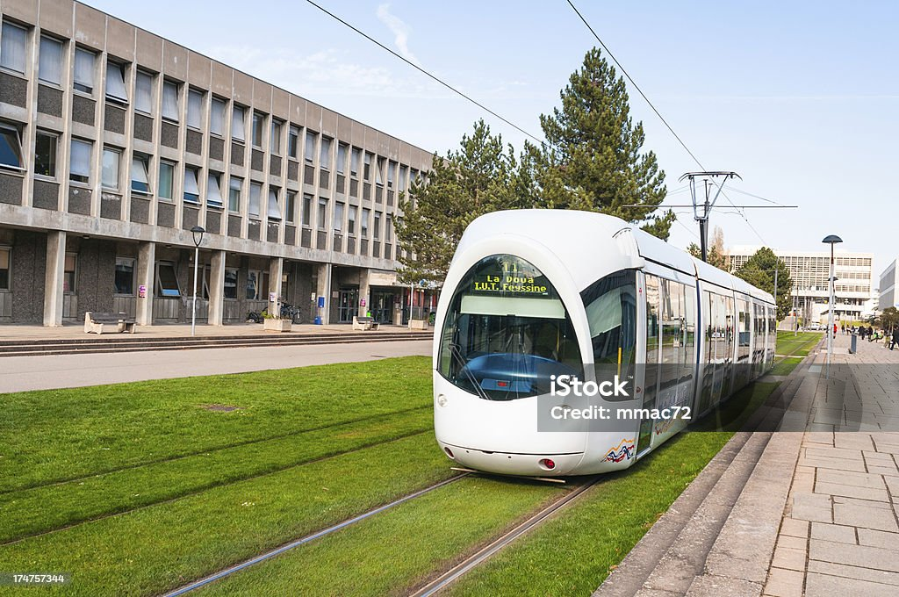
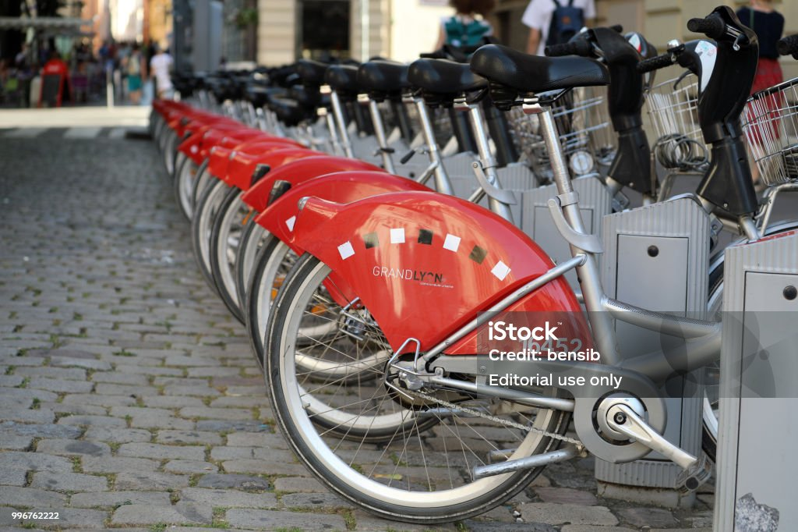

Il y a deux types de moyens de transport,les moyens de transport dit doux et les moyens de transport dit non doux. Les modes de transport doux sont plus respectueux pour l'environnement, durable et possède un impact environnemental moins élevé (exemple vélo,marche,tram,trotinette,...). Pour les moyens de transport dit non doux,leur impact environnemental est plus important et il consomme plus d'énergie non respectueuse de l'environnement (comme le pétrole) (exemple : voiture personelle, moto , ....).

